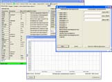
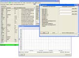

http://2a2.ru/
| тел. +7 927 800 76 16 http://2a2.ru/ |
|---|
АДАПТЕР АПМ-3 (USB/K-line)Для просмотра увеличенного изображения, кликните по фотографии прибора. Увеличенное изображение откроется в новом окне. Адаптер АПМ-3 обеспечивает преобразование сигналов порта USB ПЭВМ в сигналы K-Line (ISO 9141). Он представляет из себя микроконтроллерное устройство с программой диагностики ЭСУД автомобилей ВАЗ, УАЗ и ГАЗ по протоколу KWP2000 (ISO 14230). Внутренняя программа АПМ-3 позволяет диагностировать автомобили ВАЗ, УАЗ и ГАЗ с двигателями, оснащёнными электронной системой управления впрыском топлива с контроллерами BOSCH M1.5.4, BOSCH M1.5.4N, ЯНВАРЬ 5, BOSCH MP7.0H (euro-2), BOSCH MP7.0H (euro-3), BOSCH M7.9.7 (euro-2), BOSCH M7.9.7 (euro-3), ЯНВАРЬ 7.2, BOSCH ME17.9.7, МИКАС 10, МИКАС 11 и их модификаций. Также, она позволяет диагностировать антиблокировочную систему торможения BOSCH ABS-8.0. Для вывода диагностической информации на монитор ПЭВМ используется специальная программа usb_d. Кроме того, АПМ-3 работает с большинством бесплатных программ, использующих для связи с автомобильным котроллером COM-порт, например:
В базовый комплект АПМ-3 входит прибор АПМ-3, переходник, удлинитель USB, CD с программой usb_d и паспорт. Дополнительно к базовому комплекту можно заказать:
Руководство по эксплуатации и паспорт на АПМ-3 в формате *.pdf можно взять здесь. На странице price.html приведены цены на продукцию ООО «А2».  

Программа usb_d предназначена для вывода на монитор ПЭВМ диагностической информации, полученной от адаптера АПМ-3. Программа функционирует под управлением операционной системы MS Windows 98, MS Windows 2000 или MS Windows XP на персональной ЭВМ типа IBM-PC/AT совместно с адаптером АПМ-3. Все права на данную программу принадлежат ООО «А2», г. Ульяновск. Предложения и замечания присылайте по мэйлу a2@2a2.ru
Скачайте файл usb_d.zip (0,7 Mbytes) и распакуйте его в одну директорию. usb_obd.zip(600 Kbytes). Программа usb_obd диагностики автомобилей ВАЗ, УАЗ и ГАЗ по протоколу OBD2 (ISO 15031-5, ISO 14230-4). install.zip (1,1 Mbytes) драйверы к АПМ-3. Внимание!! Программы usb_d и usb_obd работают только с адаптером АПМ-3. Заказ прибора АПМ-3 |
•главная •где купить •цены •продукция •документация •программы •коды ГАЗ •ЭСУД ГАЗ •ЭСУД PATRIOT •ЭСУД ВАЗ •ЭСУД STEYR •автосервисы •сайты e-mail: •a2@2a2.ru |